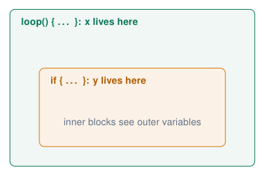

Code Quality and Debugging¶
Comments: explain the why¶
// single-line comment: until end of line
/*
multi-line comment
for headers and longer explanations
*/
// BAD: repeats the code
i = i + 1; // add 1 to i
// GOOD: explains the reason
delay(20); // DHT22 needs 20 ms between reads
// GOOD: units and ranges
const int DRY_LIMIT = 30; // soil humidity, %
-
Comments are ignored by the compiler; they are for humans (including you in 3 weeks).
-
Explain why, units, limits and assumptions; not what every line obviously does.
-
Every file starts with a header: purpose, author, date, board, wiring.
-
Commenting out code (
//) is also a quick debugging tool.
Self-documenting code
Good names reduce the need for comments: if (soilHumidity < DRY_LIMIT) needs no explanation.
Sources: Embedded Programming, lectures 1–6
Editor shortcuts: Auto Format and comments¶
Before: hard to read
void loop(){
int v=analogRead(36);
if(v>2000){
digitalWrite(23,HIGH);
}else{
digitalWrite(23,LOW);}
delay(50);}
After Ctrl+T (Auto Format)
void loop() {
int v = analogRead(36);
if (v > 2000) {
digitalWrite(23, HIGH);
} else {
digitalWrite(23, LOW);
}
delay(50);
}
: Cmd instead of Ctrl. The same keys work in VS Code.
-
Indentation shows the structure: a missing
}is visible at once. -
Debugging: select a block, comment it out, upload, check whether the problem is gone, then uncomment.
-
Habit: Ctrl+T before every upload and every hand-in.
Sources: Arduino IDE 2 Documentation
Scope: where does a variable exist?¶
void loop() {
int x = 10;
if (x > 5) {
int y = 20;
Serial.println(x); // OK
Serial.println(y); // OK
}
Serial.println(x); // OK
Serial.println(y); // ERROR: y not
} // declared in this scope

-
Braces
{ }define a scope. -
A variable exists from its declaration to the
}of its block. -
Inner blocks can see outer variables, not the other way round.
Sources: Example from lecture 3 Embedded Programming, lectures 1–6
Global, local and static variables¶
int globalCount = 0; // whole program
void countCalls() {
int localCount = 0; // new every call
static int staticCount = 0; // keeps its value
globalCount++;
localCount++;
staticCount++;
Serial.printf("g=%d l=%d s=%d\n",
globalCount, localCount, staticCount);
}
void setup() {
Serial.begin(115200);
countCalls(); // g=1 l=1 s=1
countCalls(); // g=2 l=1 s=2
countCalls(); // g=3 l=1 s=3
}
void loop() {}
-
Global: declared outside all functions; everyone can read and change it.
-
Local: created when the block starts, destroyed at its end.
-
static local: only visible inside the function, but keeps its value between calls.
Use globals sparingly
Any function can change a global: in a big program it becomes hard to know who changed what. Prefer parameters and return values.
Reading compiler errors (1/2)¶
Golden rule
Fix the first error in the output first. One missing brace can produce 20 follow-up errors.
Sources: Errors from lecture 4 Embedded Programming, lectures 1–6
Reading compiler errors (2/2)¶
Sources: Errors from lecture 4 Embedded Programming, lectures 1–6
Quiz: spot the error¶
void setup() {
Serial.begin(115200);
void loop() {
Serial.println("Hello");
}
Check your answer
Missing } after setup(): expected '}' before 'void'.
void setNumber(int value) {
Serial.println(value);
}
void setup() { setNumber("123"); }
Check your answer
"123" is text, not an int: invalid conversion.
int leds[] = {23, 22, 21};
void setup() {
for (int i = 0; i <= 3; i++)
pinMode(leds[i], OUTPUT);
}
Check your answer
i <= 3 reads leds[3]: out of bounds. Use i < 3.
void loop() {
if (test) {
If (secondTest) {
}
}
}
Check your answer
If: C++ is case sensitive (and test must exist).
Sources: Examples from lecture 4 Embedded Programming, lectures 1–6
Debugging strategies¶
General tools
-
Print statements with labels:
Serial.printf("state=%d t=%.1f\ n", \dots). -
LED indicators: light an LED when the code reaches a point (no Serial needed).
-
Comment out parts: divide and conquer until the problem disappears.
-
Minimal example: copy only the failing part into a new sketch.
-
Test one thing at a time; change one thing at a time.
Think like a detective
-
What did you expect? What happened?
-
When did it last work? What changed since then?
-
Is it hardware or software? Swap one: other board, other LED, known-good example sketch.
-
Explain the code line by line to someone else (“rubber duck”).
The most important skill
Not writing code that works the first time, but understanding why it does not work and knowing how to investigate it.
Sources: Embedded Programming, lectures 1–6
Hardware or software? The LED that does not turn off¶
The symptom
“My LED turns on, but it never turns off, even though my code writes LOW.”
-
Measure the pin with a multimeter: does the voltage change?
-
Print what the code thinks it is doing.
-
Try the LED on another pin with the Blink example.
Possible causes
-
The LED is wired to 3V3 instead of the GPIO.
-
Code and wiring use different pin numbers.
-
The
LOWline is never reached (logic error, wrongif). -
Another line writes
HIGHright after. -
pinMode()missing: the pin is an input with pull-up, the LED glows. -
LED wired to a pin that is HIGH at boot or used by something else.
Sources: Example from lecture 4 Embedded Programming, lectures 1–6
Original debugging case: the second button is not configured¶
const int LED = 23, ON_BUTTON = 34, OFF_BUTTON = 35;
void setup() {
pinMode(LED, OUTPUT);
pinMode(ON_BUTTON, INPUT);
pinMode(ON_BUTTON, INPUT); // copy/paste bug!
digitalWrite(LED, LOW);
}
void loop() {
if (digitalRead(ON_BUTTON) == HIGH) {
digitalWrite(LED, HIGH);
}
if (digitalRead(OFF_BUTTON) == HIGH) {
digitalWrite(LED, LOW);
}
}
-
The screenshot in lecture 4 configures the ON button twice.
-
Replace the second occurrence with
pinMode(OFF_BUTTON, INPUT). -
Print both input readings and check the GPIO labels against the schematic.
-
Course-board buttons are active HIGH with external pull-downs.
A suspicious line is a hypothesis
A pin can already be an input after reset, so this omission alone need not explain the symptom. Test the wiring, input value and executed branch.
Sources: Lecture 4, slide 12; pin names adapted to the course board Embedded Programming, lectures 1–6
Efficiency: do not repeat yourself¶
Before: copy-paste
if (sensorValue <= 1000) {
digitalWrite(Red, HIGH);
digitalWrite(Green, LOW);
digitalWrite(Blue, LOW);
}
if (sensorValue > 1000 && sensorValue <= 2500) {
digitalWrite(Red, LOW);
digitalWrite(Green, LOW);
digitalWrite(Blue, HIGH);
}
if (sensorValue > 2500) {
digitalWrite(Red, LOW);
digitalWrite(Green, HIGH);
digitalWrite(Blue, LOW);
}
After: a function + else if
void setColor(bool r, bool g, bool b) {
digitalWrite(Red, r);
digitalWrite(Green, g);
digitalWrite(Blue, b);
}
void loop() {
int v = analogRead(36);
if (v <= 1000) setColor(HIGH, LOW, LOW);
else if (v <= 2500) setColor(LOW, LOW, HIGH);
else setColor(LOW, HIGH, LOW);
}
-
Fewer lines, one place to change.
-
else if: no overlapping or forgotten ranges.
Sources: Example from lecture 4 Embedded Programming, lectures 1–6
Lessons from the assignments¶
-
Use Auto Format (Ctrl+T) before every hand-in.
-
Use functions: one job each.
-
Use function-specific timers: each job its own
millis()variable. Why reuse one timer for several elements? -
Be as lazy as possible: let loops, arrays and functions do the repetitive work.
-
Comments: header, units, the why.
Refactor early
If your code becomes hard to debug, refactor or redesign it now: it will fail on you during the demo.
Version control
final, finalv2, reallyreadyfordemo, asfafgrwv2 … Use Git, especially when you code together.
Sources: Recap of assignment 2, lecture 6 Embedded Programming, lectures 1–6
Exercises: code quality and debugging¶
Exercise 1 – Refactor
Take your traffic-light program from Digital I/O. Remove every magic number, add a header comment, and replace repeated code with a function setLights().
Exercise 2 – Bug hunt
Your lecturer hands out a sketch with 6 bugs (syntax, runtime and logic). Find and classify all of them; for each, write how you found it.
Exercise 3 – Scope
Predict the output of the global/local/static example, then run it. Change static int into int: what changes and why?